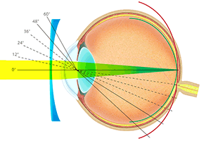
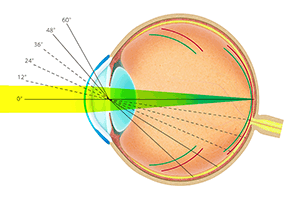

白内障手術実績2000件以上 眼底疾病症研究歴１5年 手術をしない裸眼視力の回復 児童の近視進行の抑制 ナイトレンズの処方

オルソケラトロジーとは、眠っている間に装用するコンタクトレンズです。
見た目はハードコンタクトレンズですが、角膜の形をわずかに変える作用があり、一晩着けただけで、朝レンズを外した直後から視力が改善します。中等度近視の方なら0.1の裸眼視力が1.0を超え1.5まで改善することもよくあります。
最近は各方面で取り上げられることが多くなってきましたが、当院の院長は6年ほど前から様々な方にオルソケラトロジーレンズを処方してきました。
| オルソケラトロジー治療とレーシックの比較 | オルソケラトロジー構造図 | ||
|---|---|---|---|
| オルソケラトロジー | レーシック |  |
|
| 手術 | ◎不要 | 必要 | |
| リスク | ◎装用をやめれば戻る | 元に戻らない | |
| 適応範囲 | ー4Dくらいまで | ◎ー6Dくらいまで | |
近視とは、遠くを見た時に、網膜に光が届かず、その手前で焦点を結んでしまう状態で、網膜に光が届いても、像がぼやけて見えてしまいます。 黒板の字が見えづらくなって、そのままにしていると成績低下の原因にもなってしまうかもしれません。
近視の原因は、はっきりしていませんが、主には遺伝因子・環境因子・眼軸延長の要因が考えられます。
もともと凸の形をしている角膜と水晶体が、さらに強い凸に変形している状態です。 通常よりも凸の形が強くなっているため、眼の屈折力も強くなります。 その結果、遠くを見たときに、網膜の手前で焦点が結ばれる為、ぼやけてしまいます。
眼軸が長くなっている状態です。(眼軸とは、角膜から網膜までの距離。) そのため、たとえ角膜と水晶体の屈折力が正常だとしても、網膜の手前で焦点が結ばれ、網膜までの距離が遠いため、そこまで光が届かず、ぼやけてしまいます。(右図:上 正視眼、下 軸性近視眼)
どこまで眼軸が延びるかは個人差がありますが、２０歳頃まで続くとされています。

軸性近視進行の原因として、成長によって眼軸が伸びる要因と、
何らかの刺激、環境によって眼軸が伸びていく要因が考えられています。
眼軸が伸び続けることで強度近視になってしまうとピントが合わずに見えにくいという問題だけではなく、眼球自体がいびつに変形したり網膜や視神経などの視覚にとって重要な組織が伸展(伸びたり歪んだり)することがあります。これを病的近視と言います。
将来的に眼鏡やコンタクトをつけても視力が出づらくなってしまう場合があり、その為眼軸は伸びすぎない方がいいとされています。
眼軸が伸び、軸性近視が進行し始める１０歳頃から眼軸の伸展を抑えることで、これらのリスクを減らすことができます。
軸性近視の原因として「眼軸長の伸展を促す、何らかの要因により近視が進行する」という学説があります。一般的なメガネの場合、レンズ中心部から入ってくる光は網膜にピントが合いますが、レンズの外側から入ってくる光は網膜よりも遠くにピントが合うため、それが眼軸長を伸ばす刺激となり近視が進みやすいという説です。
| メガネレンズの場合 | オルソケラトロジーの場合 |
|---|---|
|  |  |
メガネレンズによる矯正では周辺部の入光で網膜を超えたところでピントが合う。それが眼軸長伸展を促す刺激となっている可能性がある |
オルソによる矯正では、周辺部からの入光で網膜の少し手前でピンとが合うため、眼軸長を伸展させる刺激にはならないと考えられる |
一方で、角膜の形状を変化させるオルソケラトロジーの場合、周辺部の光は少し手前にピントが合うため、メガネと違い眼軸長を伸ばす刺激がなく、近視の進行が抑えられると考えられるようになりました。日本眼科医会では｢近視進行防止と屈折矯正｣研究班をサポート※し、近視の抑制方法の確立に向けた研究が進められています。また、海外でもさまざまな研究が進められ、オルソケラトロジーの近視抑制に対する効果が発表されてきています。
※出典：学校近視の現況に関する2010年度アンケート調査報告；日本の眼科；82：4号；2011年
オルソケラトロジー治療で使用するコンタクトレンズは、いわゆる酸素透過性のハードコンタクトレンズです。コンタクトレンズの洗浄を十分に行われていない場合や、レンズケースの清潔が保たれていない場合、角膜感染症を起こすことがあります。なかでも、緑膿菌やアカントアメーバーによる感染では、治療に抵抗することが多く、また視力低下や重篤な場合失明にもつながることがあります。充血や異物感、痛みは危険信号です、症状が出た場合はレンズの装用は中止して、早急に診察を受けてください。
この角膜感染症は通常のハードコンタクトレンズでも起こり、オルソケラトロジーのレンズに特有のものではありません。しかし、オルソケラトロジーのレンズは通常のレンズとはその形状が異なるため、洗浄が不十分になりやすいです。コンタクトをはずすのは、朝の忙しい時間ではありますが、きちんと洗浄する習慣をつけてください。 レンズケースはコンタクトをはめた際に流水で洗浄し、就寝中は乾燥させるようにしてください。さらに、3ヶ月ごとにケースを新しいものに交換してください。
角膜の裏面には、角膜内皮細胞という細胞があります。この細胞は一度障害を受けると脱落して、再生しないため、減少します。オルソケラトロジー治療の短期成績では、この角膜内皮細胞の減少は認められていません。しかし、通常のハードコンタクトレンズの長期装用で、角膜内皮細胞が減少することが報告されていますので、注意が必要です。
オルソケラトロジー（ナイトレンズ）の初診は、ご予約が必要となります。また、コンタクトレンズを装用中の方は適応検査を受ける前（受診日は含まない）の以下の期間はコンタクトレンズを中止していただく必要があります。
処方を受けられる場合は、オルソケラトロジーレンズ（ナイトレンズ）の取り扱い説明と装用練習を行います。
取り扱いおよび装用が問題なく行えるようになりましたら、処方は終了です。
初めて装用された翌日には、検診があります。簡単な検査を行い、診察となります。
フィッティングと効果を確認し、 特に問題がなければ、次回は1週間後検診となります。
定期検診は、1週間後･1ヵ月後･2ヵ月後･3ヵ月後となり、以降3ヵ月ごとにあります。
角膜の状態を知り、また、合併症の早期発見のためにも非常に重要ですので、必ず受診してください。見え方が急に変化したり、何か異常を感じたりした場合は、決められた検査日以外でも受診してください。
眼科全般・緑内障・糖尿病網膜症（網膜硝子体疾患）・加齢黄斑変性・日帰り白内障手術・小児眼科（斜視・弱視）・オルソケラトロジー
| 診療時間 | 月 | 火 | 水 | 木 | 金 | 土 | 日・祝 |
|---|---|---|---|---|---|---|---|
| 午前 ８：４５〜１１：３０ | ◯ | ◯ | ◯ | ◯ | ◯ | ◯ | ／ |
| 午後 ２：００〜 ６：００ | ◯ | ◯ | ※ | ◯ | ◯ | ／ | ／ |
水曜午後 手術特殊検査 休診日：日曜日・祝日・土曜午後
＊午前の混雑時は受付終了を11時15分に早める場合があります

■ 綾瀬うえむら眼科院長 植村明弘
■ 資格
医学博士、オルソケラトロジー認定医、日本眼科学会認定眼科専門医、
光線力学療法認定医、ボトックス治療認定医
■ 略歴
■ 住所 東京都足立区綾瀬4－8－17 相善ビル2F
■ 電話 03-3620-4113
■ 交通 JR常磐線各駅・地下鉄千代田線
綾瀬駅 西口 徒歩２分
※オレンジの看板が目印です
院内はすべてバリアフリーです

駅側の外観

江北橋通り側の外観
※ご応募は、お気軽にお電話（03-3620-4113）ください。